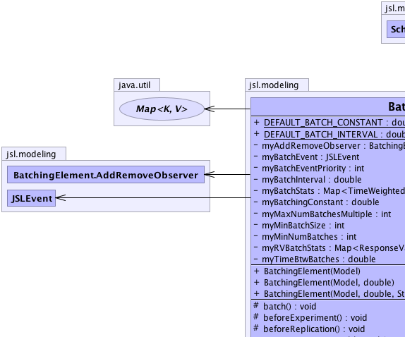
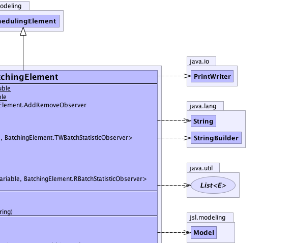
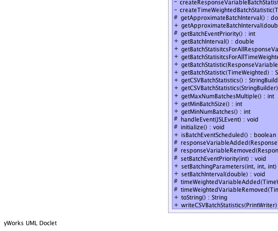
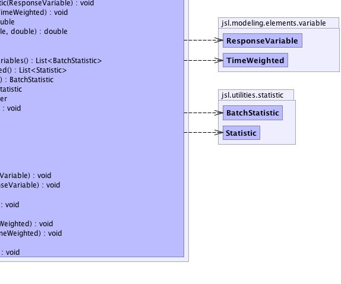

jsl.modeling.ModelElement
jsl.modeling.SchedulingElement
jsl.modeling.BatchingElement
jsl.modeling.ModelElement
jsl.modeling.SchedulingElement
jsl.modeling.BatchingElement
|
||||||||||
| PREV CLASS NEXT CLASS | FRAMES NO FRAMES | |||||||||
| SUMMARY: NESTED | FIELD | CONSTR | METHOD | DETAIL: FIELD | CONSTR | METHOD | |||||||||
java.lang.Object
public class BatchingElement
This class controls the batching of time weighted variables in the model and ensures batch collection for response variables. The batch interval is used to schedule events during a replication and must be the same throughout the replication. If the supplied interval is 0.0, then the method getApproximateBatchInterval() will be used to determine the interval for the replication. Usage: // Create a simulation Simulation s = new Simulation(); // Create a BatchingElement BatchingElement be = s.getBatchingElement(); // Set the characteristics of the batching or accept the defaults // setBatchInterval(), setBatchingParameters() // Set the running parameters of the replication s.setLengthOfReplication(50.0); s.setLengthOfWarmUp(10.0); // Tell the simulation to run s.run(); // Output some results, using toString() System.out.println(be); // Or asks for csv output file using // be.writeCSVBatchStatistics(PrintWriter out)
|  |  |
|  |  |
| Nested Class Summary | |
|---|---|
protected class |
BatchingElement.AddRemoveObserver
|
protected class |
BatchingElement.RBatchStatisticObserver
|
protected class |
BatchingElement.TWBatchStatisticObserver
|
| Nested classes/interfaces inherited from class jsl.modeling.ModelElement |
|---|
ModelElement.TimedUpdateEventAction, ModelElement.WarmUpEventAction |
| Field Summary | |
|---|---|
static double |
DEFAULT_BATCH_CONSTANT
A constant for the default batching. |
static double |
DEFAULT_BATCH_INTERVAL
A constant for the default batch interval for a replication If there is no run length specified and the user turns on default batching, then the time interval between batches will be equal to this value. |
private BatchingElement.AddRemoveObserver |
myAddRemoveObserver
Used to detect the adding and removing of ResponseVariables or TimeWeighted variables from the Model |
private JSLEvent |
myBatchEvent
A reference to the Batching event. |
private int |
myBatchEventPriority
The priority for the batching events. |
private double |
myBatchingConstant
Used in approximating a batch interval size |
private double |
myBatchInterval
A time interval (in simulated time) that represents the default time between batches The default is zero for no batching |
private java.util.Map<TimeWeighted,BatchingElement.TWBatchStatisticObserver> |
myBatchStats
Holds the statistics across the time scheduled batches for the time weighted variables |
private int |
myMaxNumBatchesMultiple
Maximum number of batches used when batching |
private int |
myMinBatchSize
Minimum batch size used when batching |
private int |
myMinNumBatches
Minimum number of batches used when batching |
private java.util.Map<ResponseVariable,BatchingElement.RBatchStatisticObserver> |
myRVBatchStats
Holds the statistics across the time scheduled batches for the time weighted variables |
private double |
myTimeBtwBatches
The time interval between batching events. |
| Constructor Summary | |
|---|---|
BatchingElement(Model model)
|
|
BatchingElement(Model model,
double interval)
|
|
BatchingElement(Model model,
double interval,
java.lang.String name)
|
|
| Method Summary | |
|---|---|
protected void |
batch()
The batch method is called during each replication when the batching event occurs This method ensures that each time weighted variable gets within replication batch statistics collected across batches |
protected void |
beforeExperiment()
This method should be overridden by subclasses that need logic to be performed prior to an experiment. |
protected void |
beforeReplication()
This method should be overridden by subclasses that need actions performed prior to each replication. |
private void |
createResponseVariableBatchStatistic(ResponseVariable r)
|
private void |
createTimeWeightedBatchStatistic(TimeWeighted tw)
|
protected double |
getApproximateBatchInterval()
This method returns a suggested batching interval based on the length of the run, the warm up period, default number of batches, and maximum batch multiple. |
double |
getApproximateBatchInterval(double repLength,
double warmUp)
This method returns a suggested batching interval based on the length of the run, the warm up period, default number of batches, and maximum batch multiple. |
protected int |
getBatchEventPriority()
Gets the batch event priority |
double |
getBatchInterval()
Gets the current batch interval length |
java.util.List<BatchStatistic> |
getBatchStatisitcsForAllResponseVariables()
Returns a list of summary statistics on all ResponseVariables variables The list is a copy of originals. |
java.util.List<Statistic> |
getBatchStatisitcsForAllTimeWeighted()
Returns a list of summary statistics on all TimeWeighted variables The list is a copy of originals. |
BatchStatistic |
getBatchStatistic(ResponseVariable r)
Returns a statistical summary BatchStatistic on the ResponseVariable This returns a copy of the summary statistics. |
Statistic |
getBatchStatistic(TimeWeighted tw)
Returns a statistical summary Statistic on the TimeWeighted variable across the observed batches This returns a copy of the summary statistics. |
java.lang.StringBuilder |
getCSVBatchStatistics()
Returns the batching statistics as CSV in a StringBuilder |
void |
getCSVBatchStatistics(java.lang.StringBuilder sb)
Gets the batching statistics to the supplied StringBuilder as comma separated value output |
int |
getMaxNumBatchesMultiple()
Gets the maximum batching multiple. |
int |
getMinBatchSize()
Gets the minimum batch size. |
int |
getMinNumBatches()
Gets the minimum number of batches. |
protected void |
handleEvent(JSLEvent event)
Can be used as a general event handler by setting the event type and conditioning on it within this method. |
protected void |
initialize()
This method should be overridden by subclasses that need actions performed to initialize prior to a replication. |
boolean |
isBatchEventScheduled()
Checks if a batching event has been scheduled for this model element |
protected void |
responseVariableAdded(ResponseVariable r)
|
protected void |
responseVariableRemoved(ResponseVariable responseVariable)
|
protected void |
setBatchEventPriority(int priority)
Sets the batch event priority. |
void |
setBatchingParameters(int minNumBatches,
int minBatchSize,
int maxNBMultiple)
Sets the parameters for batch statistics |
void |
setBatchInterval(double batchInterval)
Sets the batch interval length Changing this during a replication has no effect. |
protected void |
timeWeightedVariableAdded(TimeWeighted tw)
|
protected void |
timeWeightedVariableRemoved(TimeWeighted timeWeighted)
|
java.lang.String |
toString()
Returns the name of the class and the model element's name. |
void |
writeCSVBatchStatistics(java.io.PrintWriter out)
Writes the batching statistics to the supplied PrintWriter as comma separated value output |
| Methods inherited from class java.lang.Object |
|---|
clone, equals, finalize, getClass, hashCode, notify, notifyAll, wait, wait, wait |
| Field Detail |
|---|
public static final double DEFAULT_BATCH_INTERVAL
public static final double DEFAULT_BATCH_CONSTANT
private JSLEvent myBatchEvent
private int myBatchEventPriority
private double myTimeBtwBatches
private double myBatchInterval
private double myBatchingConstant
private int myMinBatchSize
private int myMinNumBatches
private int myMaxNumBatchesMultiple
private java.util.Map<TimeWeighted,BatchingElement.TWBatchStatisticObserver> myBatchStats
private java.util.Map<ResponseVariable,BatchingElement.RBatchStatisticObserver> myRVBatchStats
private BatchingElement.AddRemoveObserver myAddRemoveObserver
| Constructor Detail |
|---|
public BatchingElement(Model model)
public BatchingElement(Model model,
double interval)
public BatchingElement(Model model,
double interval,
java.lang.String name)
| Method Detail |
|---|
public final Statistic getBatchStatistic(TimeWeighted tw)
tw -
public final BatchStatistic getBatchStatistic(ResponseVariable r)
r -
public final java.util.List<Statistic> getBatchStatisitcsForAllTimeWeighted()
public final java.util.List<BatchStatistic> getBatchStatisitcsForAllResponseVariables()
protected final void setBatchEventPriority(int priority)
priority - The batch event priority, lower means earlierprotected final int getBatchEventPriority()
public final double getBatchInterval()
public final void setBatchInterval(double batchInterval)
batchInterval - The batch interval size in time units must be >=0, if it is larger than
run length it will not occurpublic final boolean isBatchEventScheduled()
protected final double getApproximateBatchInterval()
public final double getApproximateBatchInterval(double repLength,
double warmUp)
repLength - warmUp -
public final int getMaxNumBatchesMultiple()
public final int getMinBatchSize()
public final int getMinNumBatches()
public final void setBatchingParameters(int minNumBatches,
int minBatchSize,
int maxNBMultiple)
minNumBatches - The minimum number of batches, must be >= 2minBatchSize - The minimum number of observations per batch, must be >= 2maxNBMultiple - The maximum number of batches as a multiple of the minimum number of batches.
For example, if minNB = 20 and maxNBMultiple = 2
then the maximum number of batches allowed will be 40.
maxNBMultiple must be >= 2.protected void beforeExperiment()
ModelElement
beforeExperiment in class ModelElementprotected void beforeReplication()
ModelElement
beforeReplication in class ModelElementprivate void createTimeWeightedBatchStatistic(TimeWeighted tw)
private void createResponseVariableBatchStatistic(ResponseVariable r)
protected void initialize()
ModelElement
initialize in class ModelElementprotected void batch()
protected void handleEvent(JSLEvent event)
SchedulingElement
handleEvent in class SchedulingElementprotected void timeWeightedVariableAdded(TimeWeighted tw)
protected void responseVariableAdded(ResponseVariable r)
protected void timeWeightedVariableRemoved(TimeWeighted timeWeighted)
protected void responseVariableRemoved(ResponseVariable responseVariable)
public void writeCSVBatchStatistics(java.io.PrintWriter out)
out - public java.lang.StringBuilder getCSVBatchStatistics()
public void getCSVBatchStatistics(java.lang.StringBuilder sb)
sb - public java.lang.String toString()
ModelElement
toString in class ModelElement
|
||||||||||
| PREV CLASS NEXT CLASS | FRAMES NO FRAMES | |||||||||
| SUMMARY: NESTED | FIELD | CONSTR | METHOD | DETAIL: FIELD | CONSTR | METHOD | |||||||||